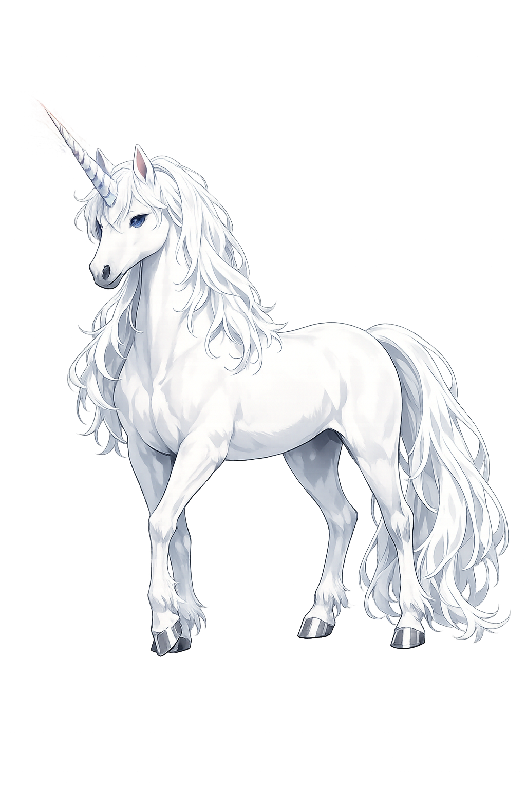

The Authentic Orthography
Purity, Rarity, Wonder · 'Single-horned' (from μόνος + κέρας)

Unicode restoration and ASCII comparison
Μονόκερως
The name in its original Greek form. Monókerōs (Μονόκερως) is attested in the source tradition — “'Single-horned' (from μόνος + κέρας)”. Its long vowels and acute accents carry the full phonetic and orthographic weight of the source tradition.
monokeros
Reduced to plain monokeros, the name loses everything that made it specific: long vowels and acute accents. What remains is an ASCII string that machines can parse but that no longer speaks with its original voice.
Monókerōs
The Unicode restoration recovers what ASCII flattened. Monókerōs restores long vowels and acute accents, returning the name to its original written dignity. The domain encodes to Punycode, but the browser displays the truth.
Monókerōs.com → xn--monkers-n0a72f.com
The non-ASCII characters in Monókerōs are encoded while the ASCII remains visible. To the DNS, it is Punycode. To humanity, it is Monókerōs.
How Monókerōs is preserved in writing
A bespoke provenance study for Monókerōs is being prepared by the PUNICODEX scholarly team.
Contribute scholarly provenance →How Monókerōs was spoken
The Untamable, the Pure, and the Report from India
Monókerōs begins not in myth but in the first travel writing of the West: Ktēsias' account of the wild asses of India, each bearing a single horn a cubit and a half long. Between his report and the medieval virgin-and-unicorn lies the whole history of how observation becomes symbol.
The single horn, credited from antiquity with detecting and neutralizing poison.
Ktēsias placed the one-horned wild asses in India — reports that likely fused rhinoceros, onager, and oryx.
The Septuagint rendered the untamable Hebrew re'em as monokeros — the unicorn's biblical passport.
In Job the re'em-monokeros is God's exhibit of what no man can bind to a furrow.
Stories of Monókerōs
The Greek tradition is zoological, not mythological: no hero fights the monokeros, no god rides it. Its power lies precisely in being reported — a creature at the edge of the map, described by those who claim to have seen its horn in the flesh.
Ktēsias, physician to the Persian king Artaxerxēs, wrote in his Indika of Indian wild asses "swift as horses, with a single horn on the forehead, white at the base, black in the middle, crimson at the tip." Their horn shavings, he says, are an antidote to all poisons; their fleetness makes them unhuntable. His report is the unicorn's birth certificate.
Aristotle, a more careful zoologist, lists in his History of Animals the solid-hooved, one-horned "Indian ass" alongside the oryx — and gets the mechanics right: a real single horn must grow from the skull's midline, unlike the paired horns of cattle. Pliny the Elder later repeats the monoceros as "the fiercest animal," catchable, he was told, only by stratagem.
When the Septuagint translators met the re'em — the wild ox of Hebrew scripture, image of untamable strength — they chose monokeros. The Latin Vulgate made it unicornis, and the King James Bible "unicorn": thus a Greek traveler's Indian ass entered the Psalms and Job, and every subsequent European imagination.
The Physiologos — the early Christian bestiary — added the capture-scene that made the legend medieval: the unicorn, uncatchable by any hunter, will run to a virgin seated in the forest and fall asleep in her lap, where the hunters take it. The allegory wrote itself: the horn the single nature, the virgin Mary, the capture the Incarnation — and the Greek traveler's report became the Middle Ages' most painted animal, from the Unicorn Tapestries to the royal arms of Scotland.
Monókerōs is the patron of honest impossibility. The Greeks never claimed to rule it, saddle it, or even see it clearly — they only reported it, at the edge of the known. It stands for the single, the indivisible, the thing that cannot be made to serve: a reminder that some of the world's value lies in what refuses to be caught.
Enter Extended Lore